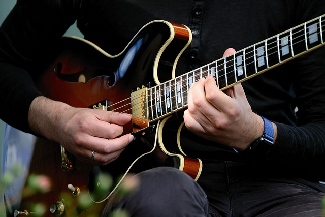
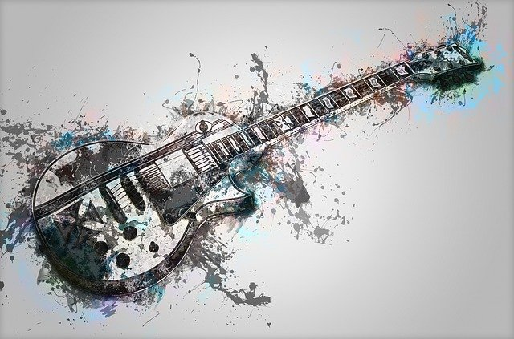

Игра на гитаре
Любовь к музыке с самого детства жила в моем сердце, и я всегда хотел учиться в музыкальной школе, но, к сожалению, не смог поступить туда. Потому несколько лет я с завистью смотрел на одноклассников, которые после уроков, подхватив с собой нотные тетради, бежали заниматься специальностью и сольфеджио. Но вот однажды на день рождения папа подарил мне гитару, и с тех пор многое изменилось в моей жизни.
Поначалу я стал осваивать новый инструмент самостоятельно. Но нотная грамота давалась мне с трудом, потому я предпочел просто выучить аккорды любимых композиций и освоить технику ритмичного боя.
Довольно быстро свои навыки я смог продемонстрировать друзьям, что в итоге сделало меня душой компании. По вечерам мы часто собирались все вместе в нашем дворе и громко пели хором популярные песни.
Вскоре я мог на слух подобрать почти любую знакомую мелодию. Родители, оценив мой талант, помогли мне записаться в музыкальную студию. И я очень счастлив, что оказался там.
Теперь, благодаря занятиям с профессиональным педагогом, я все же смог освоить ноты и научился играть на своем инструменте красивое соло. Впервые именно в студии я взял в руки электрогитару, и ее превосходное сильное звучание тут же покорило меня. Кроме того, я получил большой опыт выступлений на сцене и смог отыскать единомышленников.
Таким образом, любимое хобби стало приносить мне все больше удовольствия. Сейчас я трачу свое свободное время исключительно на то, чтобы разучивать новые мелодии и постепенно совершенствовать навыки игры на инструменте.
